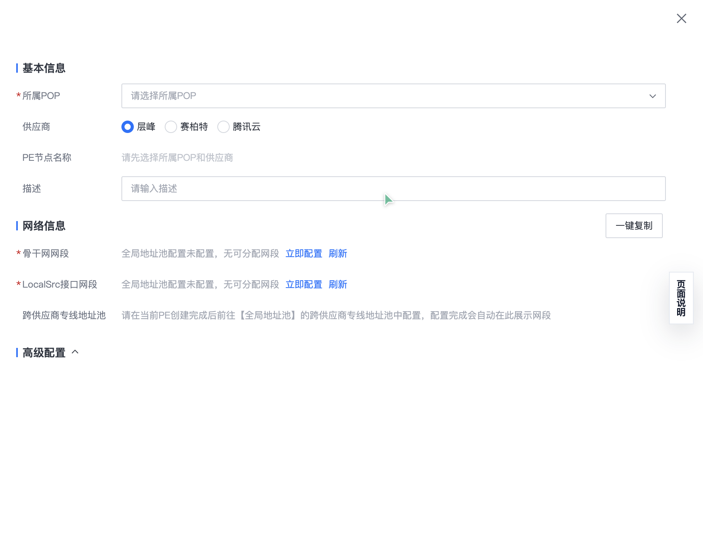
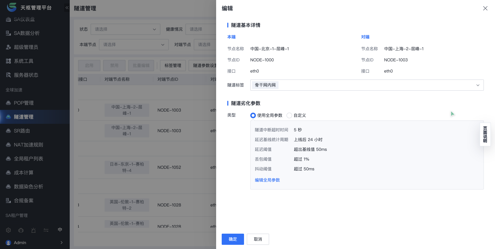
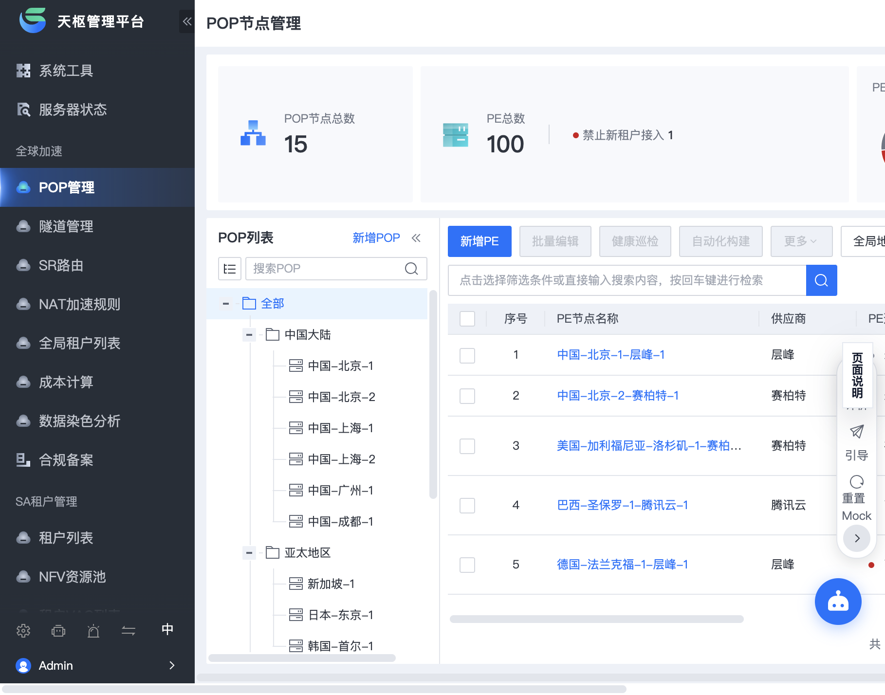
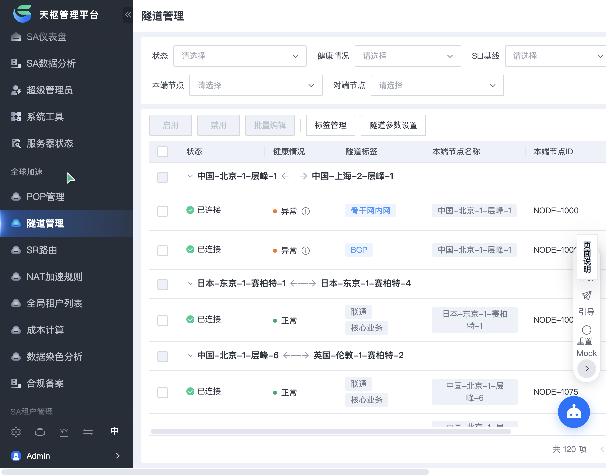

检视场景：POP 节点与隧道拓扑管理 | 测试角色：骨干网运维工程师 | 日期：2026-08-14
| 检视维度 | 检视意图 | AI执行检视内容 | AI检视结论 | 问题数 | 备注 |
|---|---|---|---|---|---|
| 维度 1：体验目标达成 | 验证核心用户主任务剧本的通畅度与体验目标闭环 | 执行【华东POP关联备用PE】与【跨国隧道升级】剧本测试，判断是否达成“高危变更极速闭环且零认知摩擦”体验目标 | 基础达成 | 1个 P2 | 主干配置链路可走通，但 PE 抽屉保存后父页面列表缺乏乐观高亮反馈，诱发二次刷新摩擦。 |
| 维度 2：产品理念契合度 | 评估方案与产品愿景、品牌内核及更高维解法的契合度 | 理解 SD-WAN 骨干网运维背景，结合走查测试，评估是否存在更高维的需求与设计解法（如主动预警与全局一眼透视指标） | 部分符合 | 1个 P2 | 健康状态缺乏 Glanceable 聚合透视指示，隧道密钥套件切换缺乏向下握手兼容性前置校验提示。 |
| 维度 3：常规交互Checklist | 排查通用 UX 交互原则、表单校验、防错及状态反馈合规性 | 匹配 Checklist 中表单行内校验、二次确认防错、操作按钮防重与抽屉关闭响应等子维度，完成交互合规性检视 | 通过 | 1个 P3 | 抽屉交互、表单基础校验与操作防重均合规；仅批量停用操作确认弹窗的量化影响说明不够具体。 |
| 维度 4：方案完备性检视 | 扫描全状态矩阵、极端临界数据与环境自适应能力 | 对全量 demo 与原型代码进行全状态（空白态/加载骨架屏/报错拦截/极端长文本截断）交互场景和细节扫描检查 | 完备性不足 | 1个 P2, 1个 P3 | 扫描识别到 2 处缺漏：① 极端超长链路命名未做 Tooltip 截断挤爆操作列；② 首次无数据时缺乏情境化空状态引导。 |

图 1：关联 PE 节点保存后，底层表格未给出即时状态渐变提示，抽屉关闭动画与列表存在 1.2s 视觉停滞
向华东-杭州骨干 POP 节点新增并关联 2 台备用 PE 路由设备，并确认其在线状态。
在 POP 列表操作列点击【关联 PE】→ 展开右侧抽屉 → 填写 IP/掩码并勾选主备策略 → 点击【确认保存】。
可手动点击列表右上角的【刷新】图标重新拉取，但该操作会丢失当前翻页页码与聚焦行。
抽屉关闭后父页面列表缺乏乐观更新反馈，目标行无高亮闪烁过渡，运维工程师无法在首屏直观判断下发指令是否已被后端生效收敛。
在高危变更时段容易诱发运维人员误以为指令未送达而发生“二次重复点击”，增加配置冲突风险。
抽屉关闭后对表格关联行施加 2 秒的主题色柔和高亮动效，并在行首打上“刚刚更新”的小徽标，保持上下文闭环。

图 2：编辑 IPsec 密钥套件时，未联动提示对端节点固件版本支持度，缺乏高危配置防错前置引导
对跨国骨干链路隧道进行加密等级升级（从 AES-128 平滑切换为 ChaCha20-Poly1305）。
在隧道拓扑列表中选中目标隧道 → 点击【配置编辑】抽屉 → 修改【加密算法】下拉项 → 点击保存。
需先退回到设备管理大盘，手动搜索对端边缘路由固件版本，再切回隧道管理页面，跨模块跳转成本极高。
安全策略变更属于影响全网连通性的高危动作，表单缺少对端版本握手能力的前置提示与兼容性检查横幅。
若对端老旧硬件不支持新算法，保存后会导致业务隧道瞬断数十秒，违反网络变更平滑保障原则。
在下拉选项旁边增加动态兼容性检查胶囊标签（如“对端支持”/“对端版本过低需协商”），并在提交前提供链路影响预估确认弹窗。

图 3：节点多选后点击【批量维护/下线】，二次确认弹窗仅有通用定性文案，缺乏定量受影响隧道计数
维护时段批量将 3 个老旧 POP 节点置为“维护隔离”状态。
勾选表格行 → 顶部批量操作栏点击【停用】 → 观察确认弹框提示信息。
需逐个进入 3 个节点的详情抽屉，手动口算其承载的活跃隧道总数。
防错弹窗提示为“确定要停用所选 3 个节点吗？”，缺少关键量化影响说明（如“涉及 14 条活跃隧道、预估 2.3Gbps 流量需自动重路由”）。
增加了运维负责人的心理负担和复核时间，容易因信息透明度不足而延误维护窗口期。
弹窗内集成轻量影响清单：“所选 3 个节点共承载 14 条隧道（其中 2 条无备用路由），确认自动切换？”，提升决策透明度。

图 4：当对端地域命名为“AP-SOUTHEAST-SINGAPORE-AZ02-BACKBONE-PRI”时，列宽无限撑开导致操作按钮需水平滚动 400px 方可触达
在 1440x900 标准分辨率下，快速查看多地域跨国混合隧道并执行单行诊断操作。
加载包含长命名的跨国专线测试数据 → 浏览表格右侧操作列 → 发现视口内无法直接看到【诊断】与【编辑】按钮。
必须将鼠标移至表格底部横向滚动条拖拽至最右端，或者缩小浏览器整体缩放比例至 75%。
根据《方案完备性检视 5. 极端临界数据态》，表格列未设置自适应最大宽度限制与溢出文本气泡（Tooltip），多字符长文本直接破坏了表格容器的弹性栅格布局。
高频网络告警处置场景下，运维人员每次操作均需反复拖拽横向滚动条，严重拖慢单点故障恢复效率。
对“隧道名称”、“对端 PE 标识”列设定固定最大宽度（如 240px），开启单行省略截断 `...`，并在 Hover 时弹出完整名称浮层气泡；同时将最右侧【操作】列固定（Fixed Right）。
说明：经源码静态检视，该状态组件在原型中未被定义或未提供独立渲染视图
新开通租户首次初始化网络拓扑，或运维人员在特定未覆盖地域下检索可用 POP 资源。
扫描 POP 节点表格与抽屉组件的源码结构，排查 `empty` 插槽与首访占位逻辑。
未定义差异化空状态模板，用户在筛选无结果时需抬头重新寻找顶部重置按钮。
根据《方案完备性检视 2. 空白/零数据态》，源码中表格仅定义了默认文字占位，未区分“首访无数据（需引导创建）”与“搜索无匹配（需一键清空筛选）”两种不同心智模式的情境化插槽。
新租户首次配置缺乏心智引流路径，增加开通上手的学习与摸索门槛。
提供差异化空状态插槽：① 搜索无结果时提供【一键重置筛选条件】次级按钮；② 租户首次无数据时展示拓扑插画并提供【立即接入首个 POP 节点】主行动按钮。
图 6：隧道监控折线图 WebSocket 连接状态观察
在弱网模拟下发现实时监控图表存在 3 次连续 500ms 重试，未观察到显式重试上限或向用户展示“连接中断，点击手动重试”的行内兜底提示。
需进一步结合后端网关的长连接保活配置，确认在长时间断网恢复后前端是否能无感静默恢复图表推流，避免造成控制台内存堆积。
| 问题等级 | 单项扣分 | 扣分上限 | 业务后果定性标准（严格依据） | 典型业务特征 |
|---|---|---|---|---|
| P1 (严重) | 10分 | 无上限 | 主任务死胡同：核心排查/配置路径完全阻断且无替代方案；或存在重大数据丢失/高危风险防误触机制缺失。 | 阻塞性 Bug、流程完全断裂、高危操作无确认机制。 |
| P2 (较重) | 5分 | 无上限 | 关键上下文断层/高频剧烈摩擦：跨页面跳转重置了过滤条件/时间范围导致排查打断；或日均高频操作被迫增加 ≥3 次冗余跳转；或关键诊断指标缺失导致无法归因。 | 告警分析下钻丢失参数、高频场景严重低效、核心诊断关联数据缺失。 |
| P3 (轻微) | 2分 | 无上限 | 轻微体验干预：有直观的可替代绕行路径；次要信息层级模糊；低频配置项交互不够顺畅。 | 次要功能障碍、视觉/交互不一致、低频场景感知问题。 |
| P4 (瑕疵) | 0.5分 | 最多扣3分/类 | 细节瑕疵：纯视觉/文案细节，不影响功能决策与任何任务流程。 | 对齐/间距瑕疵、动效微调、极端边缘场景。 |